Konvergenzverhalten von Potenzreihen auf dem Rand
1. Satz
Sei  eine Potenzreihe in
eine Potenzreihe in  mit Konvergenzradius
mit Konvergenzradius  Dann folgt für die Konvergenzscheibe:
Dann folgt für die Konvergenzscheibe:
Sei 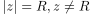, dann konvergiert  g.d.w. 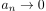 konvergiert und Monoton ist
g.d.w. 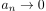 konvergiert und Monoton ist
2. Beweis
o.B.d.A. für monoton fallend Folge:
Da 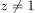 folgt insbesondere 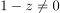 und damit konvergiert g.d.w. 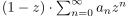 ebenfalls konvergiert
Dabei gilt:
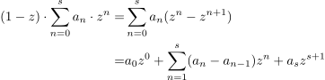
1
Dabei gilt wegen Monotonie:
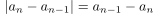
2
und somit für die absolute konvergenz wegen 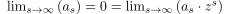 auhc
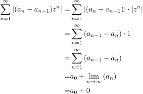
3
damit konvergiert 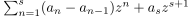 für 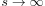 Absolute Konvergenz und damit auch wegen der Konvergenz einer absolut konvergenten Reihe (*Verschiebung zwischen Index funktioniert im Allgemeinen nicht mit Betragstrichen)
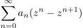
4
Durch Multiplikation mit 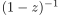 erhalten wir auch unsere ursprüngliche Reihe